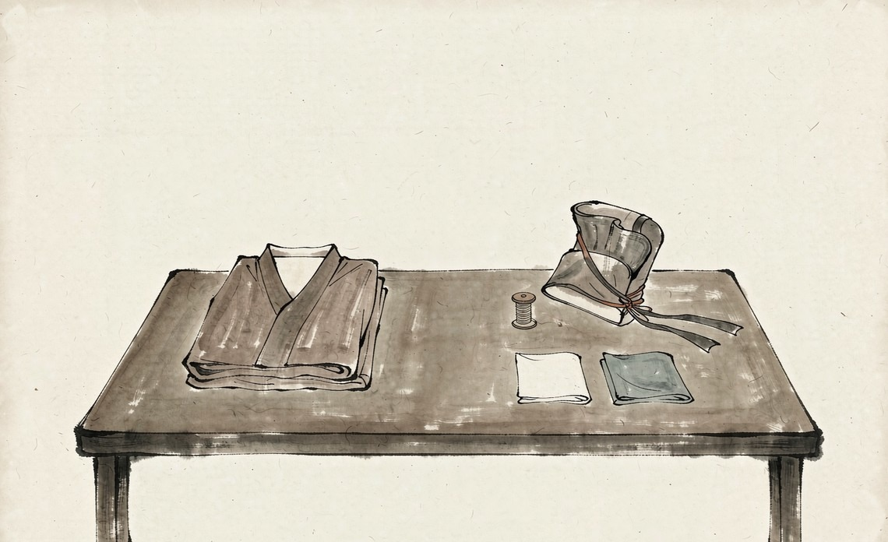
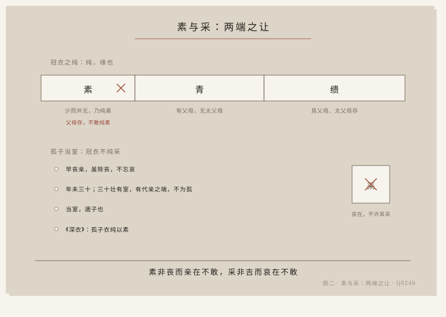

曲礼上 · 一·二十五 · 第 24 课
这一节讲衣裳的颜色：父母在，冠与衣的镶边不用纯白；失了父的孤子当家，镶边不用彩色。一节两句，一句是「不敢素」，一句是「不敢采」。
说什么事：为人子者，父母存，冠衣不纯素；孤子当室，冠衣不纯采。
落在哪一层：教。上节讲出入与行事，这节讲身上穿的颜色——礼细到一根镶边。
为何编在此位：一·二十四从门槛出去，此节回到身上：人还没出门，衣服先说话。
【经】為人子者，父母存，冠衣不純素。孤子當室，冠衣不純采。
纯 郑注：「纯，缘也。」疏：「冠纯谓冠饰也，衣纯谓深衣领缘也。」——「纯」不是整件颜色，是镶边。
不纯素 郑注：「为其有丧象也。」素是丧色，亲在而以素缘，是拿丧色自处。
等次 疏：「《礼》，具父母、太父母存，冠衣纯以缋；若有父母，无太父母，则纯以青；若少而并无，则乃纯素也。」
孤子 郑注：「早丧亲，虽除丧，不忘哀也。谓年未三十者。三十壮，有室，有代亲之端，不为孤也。」
当室 郑注：「当室，適子也。《深衣》曰：『孤子衣纯以素。』」
做人家儿子的，父母在，冠与衣的镶边不用纯白。失了父而承家的孤子，冠与衣的镶边不用彩色。
一节两句，其实是一句话的两头：颜色记着亲在不在。亲在，不敢用丧色；亲不在而年少，不忍用吉色。礼不在衣上，在衣上那一道窄边上。
第一层 素是丧色，亲在不敢自处丧 郑注四字：「为其有丧象也。」穿什么不是审美，是身份宣告。父母在而衣纯素，等于对外说「我家有丧」。
第二层 镶边有等，礼用颜色记亲之存否 疏把等次排开：父母、祖父母俱在，纯以缋（彩）；有父母而无祖父母，纯以青；少而皆无，乃纯素。三代存否，一根镶边分出三档——这是礼最经济的记事法：不必问，看衣便知。
第三层 孤子不纯采：不是不许他吉，是哀不许 郑注定得极严：「谓年未三十者。三十壮，有室，有代亲之端，不为孤也。」三十是界：未三十而失父，虽已除服，仍不作吉色；过了三十，有妻有室，能代亲承事，便许其采。
第四层 「不言凡」的分寸 疏一句要紧：「不言凡者，若仕者或遇凶荒，虽亲存亦须素服，非要在亲没，故不言凡。」——所以这不是通则，是有例外的常礼；礼自己留了门。
与今日何干 今日穿衣只看场合，不看亲。此节提醒：身上有颜色，颜色会说家里的事。今日不必素缘青缘，但「不以丧色自处于亲在之日」，这层意思还站得住。
| 左 | 右 |
|---|---|
| 父母存，冠衣不纯素 | 为其有丧象也 |
| 纯，缘也 | 冠纯为冠饰，衣纯为领缘 |
| 俱存纯以缋，有父母纯以青 | 少而并无，乃纯素 |
| 孤子当室，冠衣不纯采 | 年未三十，虽除丧不忘哀 |
| 三十壮有室，有代亲之端 | 不为孤 |

